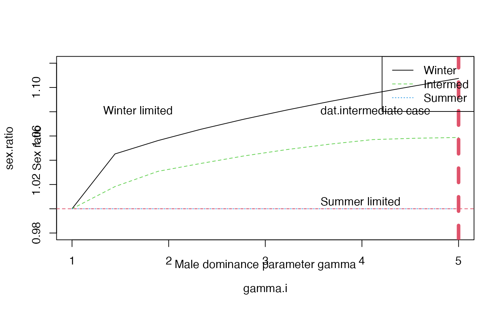

h-make_figure_28_5.RmdFigure 28.5 investigates how changes in the male dominance parameter (gamma) impacts the sex ratio in the context of three scenarios
Load the package
library(redstart)
There param_ranges() function has a “figure = …” arguement and also a “scenario = …”.
The intial range of the parameters are made by setting “figure = 28.5” and “scenario” to “winter”, “summer”, or “int”. This sets the fixed parameters for each value and the min of gamma to 1 and the max of gamma to 5.
F28.5.range.winter <- param_ranges(figure = 28.5, scenario = "winter") #> Setting breeding 'source' carrying capacity K.bc to 800 #> Setting winter 'good' carrying capacity K.wg to 484 #> #> Setting male winter dominance parameter to vary from 1 to 5 F28.5.range.summer <- param_ranges(figure = 28.5, scenario = "summer") #> Setting breeding 'source' carrying capacity K.bc to 205 #> Setting winter 'good' carrying capacity K.wg to 900 #> #> Setting male winter dominance parameter to vary from 1 to 5 F28.5.range.inter <- param_ranges(figure = 28.5, scenario = "int") #> Setting breeding 'source' carrying capacity K.bc to 224 #> Setting winter 'good' carrying capacity K.wg to 580 #> #> Setting male winter dominance parameter to vary from 1 to 5
This code makes a dataframe which summaries these parameters.
data.frame(winter = head(F28.5.range.winter), int = head(F28.5.range.inter), summer = head(F28.5.range.summer)) #> winter.min winter.max int.min int.max summer.min summer.max #> gamma 1.0 5.0 1.0 5.0 1.0 5.0 #> co. 1.0 1.0 1.0 1.0 1.0 1.0 #> K.bc 800.0 800.0 224.0 224.0 205.0 205.0 #> K.bk 10000.0 10000.0 10000.0 10000.0 10000.0 10000.0 #> K.wg 485.0 485.0 580.0 580.0 900.0 900.0 #> S.w.mg 0.8 0.8 0.8 0.8 0.8 0.8
param_seqs() generates values between the minimum and the maxium.
F28.5.win.seq <- param_seqs(F28.5.range.winter) F28.5.int.seq <- param_seqs(F28.5.range.inter) F28.5.sum.seq <- param_seqs(F28.5.range.summer,len.out= 20)
For Figure 28.5 only the breeding ground carrying capacity is varied.
head(F28.5.win.seq,3) #> $gamma #> [1] 1.000000 1.444444 1.888889 2.333333 2.777778 3.222222 3.666667 4.111111 #> [9] 4.555556 5.000000 #> #> $co. #> [1] 1 #> #> $K.bc #> [1] 800
All combinations of parameters are created using param_grid()
F28.5.win.grid <- param_grid(param.seqs = F28.5.win.seq) #> The dimension of the fully expanded dataframe is: #> 10 by 30 F28.5.int.grid <- param_grid(param.seqs = F28.5.int.seq) #> The dimension of the fully expanded dataframe is: #> 10 by 30 F28.5.sum.grid <- param_grid(param.seqs = F28.5.sum.seq) #> The dimension of the fully expanded dataframe is: #> 20 by 30
Finally runFAC_multi() is called for each scenario’s grid.
F28.5.FAC.win <- runFAC_multi(param.grid = F28.5.win.grid) #> #> Model at equilibrium after 62 iterations #> #> Model at equilibrium after 156 iterations #> #> Model at equilibrium after 155 iterations #> #> Model at equilibrium after 165 iterations #> #> Model at equilibrium after 156 iterations #> #> Model at equilibrium after 156 iterations #> #> Model at equilibrium after 153 iterations #> #> Model at equilibrium after 159 iterations #> #> Model at equilibrium after 154 iterations #> #> Model at equilibrium after 149 iterations F28.5.FAC.int <- runFAC_multi(param.grid = F28.5.int.grid) #> #> Model at equilibrium after 64 iterations #> #> Model at equilibrium after 78 iterations #> #> Model at equilibrium after 79 iterations #> #> Model at equilibrium after 82 iterations #> #> Model at equilibrium after 82 iterations #> #> Model at equilibrium after 82 iterations #> #> Model at equilibrium after 83 iterations #> #> Model at equilibrium after 83 iterations #> #> Model at equilibrium after 83 iterations #> #> Model at equilibrium after 83 iterations F28.5.FAC.sum <- runFAC_multi(param.grid = F28.5.sum.grid) #> #> Model at equilibrium after 94 iterations #> #> Model at equilibrium after 94 iterations #> #> Model at equilibrium after 94 iterations #> #> Model at equilibrium after 94 iterations #> #> Model at equilibrium after 94 iterations #> #> Model at equilibrium after 94 iterations #> #> Model at equilibrium after 94 iterations #> #> Model at equilibrium after 94 iterations #> #> Model at equilibrium after 94 iterations #> #> Model at equilibrium after 94 iterations #> #> Model at equilibrium after 94 iterations #> #> Model at equilibrium after 94 iterations #> #> Model at equilibrium after 94 iterations #> #> Model at equilibrium after 94 iterations #> #> Model at equilibrium after 94 iterations #> #> Model at equilibrium after 94 iterations #> #> Model at equilibrium after 94 iterations #> #> Model at equilibrium after 94 iterations #> #> Model at equilibrium after 94 iterations #> #> Model at equilibrium after 94 iterations
Once all calls to runFAC_mulit() are done we can plot using plot_Fig28_5().
plot_Fig28_5(dat.winter.lim = F28.5.FAC.win$multiFAC.out.df.RM, dat.intermediate = F28.5.FAC.int$multiFAC.out.df.RM, dat.summer.lim = F28.5.FAC.sum$multiFAC.out.df.RM, drain = T)
